수질환경산업기사 (2013-03-10 기출문제)
1과목: 수질오염개론
1. 어느 물질의 반응시작 때의 농도가 200mg/L이고 2시간 후의 농도가 35mg/L로 되었다. 반응시작 1시간 후의 반응물질 농도는? (단, 1차반응기준, 자연대수기준)
- 약 84mg/L
- 약 92mg/L
- 약 107mg/L
- 약 114mg/L
(정답률: 77%)

2. 산소의 포화농도가 9.14mg/L인 하천에서 t=0 일때 DO농도가 6.5mg/L라면 물이 3일 및 5일 흐른 후 하류에서의 DO농도는? (단, 최종 BOD=11.3mg/L, k1=0.1/day, k2=0.2/day, 상용대수기준)
- 3일 후 DO농도=5.7mg/L, 5일 후 DO농도=6.1mg/L
- 3일 후 DO농도=5.7mg/L, 5일 후 DO농도=6.4mg/L
- 3일 후 DO농도=6.1mg/L, 5일 후 DO농도=7.1mg/L
- 3일 후 DO농도=6.1mg/L, 5일 후 DO농도=7.4mg/L
(정답률: 61%)
3. pH=4.5인 물의 수소이온농도(M)는?
- 약 3.2×10-5M
- 약 5.2×10-5M
- 약 3.2×10-4M
- 약 5.2×10-4M
(정답률: 77%)
4. 하천주변에 돼지를 키우려고 한다. 이 하천은 BOD가 2.0mg/L이고 유량이 100,000m3/day이다. 돼지 1마리당 BOD배출량은 0.25kg/day라고 한다면 최대 몇 마리까지 키울 수 있는가? (단, 하천의 BOD는 6mg/L을 유지하려고 한다.)
- 1600
- 2000
- 2500
- 3000
(정답률: 60%)
5. 다음에 나타낸 오수 미생물 중에서 유황화합물을 산화하여 균체 내 또는 균체외에 유황입자를 축적하는 것은?
- Zoogloea
- Sphaerotilus
- Beggiatoa
- Crenothrix
(정답률: 77%)
6. 증류수 500mL에 NaOH 0.01g을 녹이면 pH는? (단, NaOH의 분자량은 40이고 완전해리 한다.)
- 10.4
- 10.7
- 11.0
- 11.3
(정답률: 71%)
7. 해수에 관한 설명으로 옳은 것은?
- 해수의 밀도는 담수보다 작다.
- 염분은 적도해역에서 높고, 남·북 양극 해역에서 다소 낮다.
- 해수의 Mg/Ca비는 담수의 Mg/Ca비 보다 작다.
- 수심이 깊을수록 해수 주요 성분 농도비의 차이는 줄어든다.
(정답률: 71%)
8. 글리신(C2H5O2N)이 호기성조건에서 CO2, H2O, HNO3로 변화될 때 글리신 10g 의 경우 총 산소 필요량은 약 몇 g인가?
- 15
- 20
- 30
- 40
(정답률: 56%)
9. BOD5가 180mg/L이고 COD가 400mg/L인 경우, 탈산소계수(k1)의 값은 0.12/day였다. 이때 생물학적으로 분해 불가능한 COD는? (단, 상용대수 기준)
- 100mg/L
- 120mg/L
- 140mg/L
- 160mg/L
(정답률: 64%)
10. 정체해역에 조류 등이 이상 증식하여 해수의 색을 변색시키는 현상을 적조현상이라 한다. 이때 어류가 죽는 원인과 가장 거리가 먼 것은?
- 플랑크톤의 이상증식은 해수중의 DO를 고갈시킨다.
- 독성을 가진 플랑크톤에 의해 어류가 폐사한다.
- 적조현상에 의한 수표면 수막현상으로 인해 어류가 폐사한다.
- 이상 증식한 플랑크톤이 어류의 아가미에 부착되어 호흡장애를 일으킨다.
(정답률: 78%)
11. [기체가 관련된 화학반응에서는 반응하는 기체와 생성하는 기체의 부피사이에 정수관계가 성립한다]라는 내용의 기체법칙은?
- Graham의 결합 부피 법칙
- Gay-Lussac의 결합 부피 법칙
- Dalton의 결합 부피 법칙
- Henry의 결합 부피 법칙
(정답률: 77%)
12. 0.01N 약산이 2% 해리되어 있을 때 이 수용액의 pH는?
- 3.1
- 3.4
- 3.7
- 3.9
(정답률: 76%)
13. Formaldehyde(CH2O) 1250mg/L의 이론적인COD는?
- 1263mg/L
- 1333mg/L
- 1423mg/L
- 1594mg/L
(정답률: 78%)
14. 콜로이드에 관한 설명으로 틀린 것은?
- 콜로이드는 입자크기가 크기 때문에 보통의 반투막을 통과하지 못한다.
- 콜로이드 입자들이 전기장에 놓이게 되면 입자들은 그 전하의 반대쪽 극으로 이동하여 이러한 현상을 전기영동이라 한다.
- 일부 콜로이드 입자들의 크기는 가시광선 평균 파장 보다 크기 때문에 빛의 투과를 간섭한다.
- 콜로이드의 안정도는 척력과 중력의 차이에 의해 결정된다.
(정답률: 54%)
15. 물의 동점성계수를 가장 알맞게 나타낸 것은?
- 전단력 γ과 점성계수 μ를 곱한 값이다.
- 전단력 γ과 밀도 ρ를 곱한 값이다.
- 점성계수 μ를 전단력 γ로 나눈 값이다.
- 점성계수 μ를 밀도 ρ로 나눈 값이다.
(정답률: 90%)
16. 탈산소계수 K(상용대수)가 0.1/day인 어떤 폐수 5일 BOD가 500mg/L이라면 이 폐수의 3일 후에 남아있는 BOD는?
- 366mg/L
- 386mg/L
- 416mg/L
- 436mg/L
(정답률: 78%)
17. 수산화나트륨(NaOH) 10g을 물에 용해시켜 200mL로 만든 용액의 농도(N)는?
- 0.62
- 0.80
- 1.⑤
- 1.25
(정답률: 64%)
18. 호수나 저수지를 상수원으로 사용할 경우 전도(turn over)현상으로 수질 악화가 우려 되는 시기는?
- 봄과 여름
- 봄과 가을
- 여름과 겨울
- 가을과 겨울
(정답률: 88%)
19. 다음의 용어에 대한 설명 중 틀린 것은?
- 독립영양계 미생물이란 CO2를 탄소원으로 이용하는 미생물이다.
- 종속영양계 미생물이란 유기탄소를 탄소원으로 이용하는 미생물을 말한다.
- 화학합성독립영양계 미생물은 유기물의 산화환원반응을 에너지원으로 한다.
- 광합성독립영양계 미생물은 빛을 에너지원으로 한다.
(정답률: 83%)
20. 다음 중 물이 가지는 특성으로 틀린 것은?
- 물의 밀도는 0℃에서 가장 크며 그 이하의 온도에서는 얼음형태로 물에 뜬다.
- 물은 광합성의 수소공여체이며 호흡의 최종산물이다.
- 생물체의 결빙이 쉽게 일어나지 않는 것은 융해열이 크기 때문이다.
- 물은 기화열이 크기 때문에 생물의 효과적인 체온 조절이 가능하다.
(정답률: 93%)
2과목: 수질오염방지기술
21. 순산소활성슬러지법의 특징으로 틀린 것은?
- 이차침전지에서 수컴이 발생하는 경우가 많다.
- 잉여슬러지는 표준활성슬러지법에 비하여 일반적으로 많이 발생한다.
- 표준활성슬러지법의 1/2 정도의 포기시간으로 처리 수의 BOD, SS, COD 및 투시도 등을 표준활성슬러지법과 비슷한 결과를 얻을 수 있다.
- MLSS농도는 표준활성슬러지법의 2배 이상으로 유지 가능하다.
(정답률: 67%)
22. 폐수처리 과정인 침전시 입자의 농도가 매우 높아 입자들끼리 구조물을 형성하는 침전형태로 옳은 것은?
- 농축침전
- 응집침전
- 압밀침전
- 독립침전
(정답률: 67%)
23. 지름 600mm인 하수관에 15.3m3/min의 하수가 흐를 때, 관내 유속은?
- 약 2.5m/sec
- 약 1.4m/sec
- 약 1.2m/sec
- 약 0.9m/sec
(정답률: 57%)
24. 하수 슬러지 농축 방법 중 부상식 농축의 장단점으로 틀린 것은?
- 잉여슬러지의 농축에 부적합하다.
- 소요면적이 크다.
- 실내에 설치할 경우 부식문제가 유발된다.
- 약품 주입 없이 운전이 가능하다.
(정답률: 44%)
25. 하루 2500m3 폐수를 처리할 수 있는 폭기조를 시공하고자 한다. 폭기조 내 산기관 1개당 300L/min의 공기를 공급할 때 필요한 산기관 개수는? (단, 폭기조용적당 공기공급량은 3.0m3/m3∙hr, 폭기조 체류시간 18hr이다.)
- 313
- 326
- 347
- 369
(정답률: 46%)
26. 흐름이 거의 없는 물에서 비중이 큰 무기성 입자가 침강할 때, 다음 중 침강속도에 가장 민감하게 영향을 주는 것은?
- 수온
- 물의 점성도
- 입자의 밀도
- 입자의 직경
(정답률: 68%)
27. 생물학적 방법으로 하수내의 인을 제거하기 위한 고도처리공정인 A/O 공법에 관한 설명으로 맞는 것은?
- 무산소조에서 질산화 및 인의 과잉섭취가 일어난다.
- 혐기조에서 유기물제거와 함께 인의 과잉섭취가 일어난다.
- 폭기조에서 인의 방출과 질산화가 동시에 일어난다.
- 하수내의 인은 결국 잉여슬러지의 인발에 의하여 제거된다.
(정답률: 61%)
28. 수중의 암모니아(NH3)를 공기탈기법(air stripping)으로 제거하고자 할 때 가장 중요한 인자는?
- 기압
- pH
- 용존산소
- 공기공급량
(정답률: 70%)
29. 1차 침전지에서 슬러지를 인발(引拔)했을 때 함수율이 99%이었다. 이 슬러지를 함수율 96%로 농축시켰더니 33.3m3이었다면 1차 침전지에서 인발한 농축전 슬러지량은? (단, 비중은 1.0 기준)
- 113m3
- 133m3
- 153m3
- 173m3
(정답률: 65%)
30. BOD 용적부하 0.2kg/m3ㆍd로 하여 유량 300m3/d, BOD 200mg/L인 폐수를 활성슬러지법으로 처리하고자 한다. 필요한 폭기조의 용량은?
- 150m3
- 200m3
- 250m3
- 300m3
(정답률: 72%)
31. 유량 1,000m3/day, 유입 BOD 600mg/L인 폐수를 활성슬러지공법으로 처리하고 있다. 폭기시간 12시간, 처리수 BOD농도 40mg/L, 세포 증식계수 0.8, 내생 호흡계수 0.08/d, MLSS농도 4,000mg/L 라면 고형물의 체류시간(day)은?
- 약 4.3
- 약 6.9
- 약 8.6
- 약 10.3
(정답률: 58%)
32. 슬러지 부피(SV)가 평균 25% 일 때 SVI를 60~100으로 유지하기 위한 MLSS의 농도 범위로 가장 옳은 것은?
- 1250 ~ 2500 mg/L
- 2300 ~ 3240 mg/L
- 2500 ~ 4170 mg/L
- 2800 ~ 5120 mg/L
(정답률: 65%)
33. 수은함유 폐수를 처리하는 공법과 가장 거리가 먼것은?
- 황화물 침전법
- 아말감법
- 알칼리 환원법
- 이온교환법
(정답률: 60%)
34. 부유물질의 농도가 300mg/L인 하수 1,000톤의 1차침전지(체류시간 1시간)에서의 부유물질 제거율은 60%이다. 체류시간을 2배 증가시켜 제거율이 90%로 되었다면 체류시간을 증대시키기 전과 후의 슬러지발생량(m3)의 차이는? (단, 하수비중: 1.0, 슬러지비중:1.0, 슬러지 함수율 95% 기준)
- 1.3m3
- 1.8m3
- 2.3m3
- 2.7m3
(정답률: 60%)
35. 폐수유량이 3,000m3/d, 부유고형물의 농도가 200mg/L이다. 공기부상시험에서 공기/고형물비가 0.03 일 때 최적의 부상을 나타내며 이때 공기용해도는 18.7mL/L이고 공기용존비가 0.5이다. 부상조에서 요구되는 압력은? (단, 비순환식 기준)
- 약 2.0 atm
- 약 2.5 atm
- 약 3.0 atm
- 약 3.5 atm
(정답률: 58%)
36. 하수 내 함유된 유기물질 뿐 아니라 영양물질까지 제거하기 위한 공법인 Phostrip 공법에 관한 설명으로 옳지 않은 것은?
- 생물학적 처리방법과 화학적 처리방법을 조합한 공법이다.
- 유입수의 일부를 혐기성 상태의 조(槽)로 유입시켜 인을 방출시킨다.
- 유입수의 BOD부하에 따라 인 방출이 큰 영향을 받지 않는다.
- 기존에 활성슬러지 처리장에 쉽게 적용이 가능하다.
(정답률: 53%)
37. 교반강도를 표시하는 속도구배(G; velocity Gradient)를 가장 적절히 나타낸 식은? (단, μ:점성계수, W:반응조 단위 용적당 동력, V:반응조 부피, P:동력)
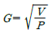
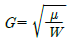
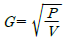
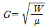
(정답률: 60%)
38. 응집침전 처리수가 100[m3/day]이다. 이 처리수를 모래여과하여 방류한다면 필요한 여과 면적은? (단, 여과속도는 2[m/hr]로 할 경우)
- 1.8m2
- 2.1m2
- 2.4m2
- 2.8m2
(정답률: 58%)
39. BOD 200mg/L인 폐수를 일차침전 처리 후(처리효율 25%), BOD부하 1.5kg BOD/m3·day로 깊이 2m인 살수여상을 통과할 때 수리학적 부하는?
- 30m3/m2∙day
- 20m3/m2∙day
- 15m3/m2∙day
- 10m3/m2∙day
(정답률: 57%)
40. 정수시설인 플록형성지에서 플록형성시간의 표준으로 옳은 것은?
- 계획 정수량에 대하여 2~5분간
- 계획 정수량에 대하여 5~10분간
- 계획 정수량에 대하여 10~20분간
- 계획 정수량에 대하여 20~40분간
(정답률: 44%)
3과목: 수질오염공정시험방법
41. 다음 중 4각 웨어의 유량 측정 공식은? (단, Q: 유량(m3/분), K: 유량계수, b: 절단의 폭(m), h: 웨어의 수두(m))
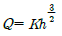
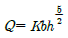
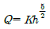
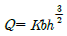
(정답률: 79%)
42. 취급 또는 저장하는 동안에 기체 또는 미생물이 침입하지 아니하도록 내용물을 보호하는 용기는?
- 밀폐용기
- 기밀용기
- 차광용기
- 밀봉용기
(정답률: 82%)
43. 불소화합물 측정방법을 가장 적절하게 짝지은 것은? (단, 수질오염공정시험기준)
- 자외선/가시선 분광법 - 기체크로마토그래피
- 자외선/가시선 분광법 - 불꽃 원자흡수분광광도법
- 유도결합플라스마 원자발광광도법 - 불꽃 원자흡수분광광도법
- 자외선/가시선 분광법 - 이온크로마토그래피
(정답률: 54%)
44. 다음의 금속류 중에서 불꽃 원자흡수분광광도법으로 측정하지 않는 것은? (단, 수질오염공정시험기준)
- 안티몬
- 주석
- 셀레늄
- 수은
(정답률: 53%)
45. 시료채취시의 유의사항에 관련된 설명으로 옳은 것은?
- 휘발성유기화합물 분석용 시료를 채취할 때에는 뚜껑의 격막을 만지지 않도록 주의하여아 한다.
- 유류 물질을 측정하기 위한 시료는 밀도차를 유지하기 위해 시료용기에 70~80% 정도를 채워 적정공간을 확보하여야 한다.
- 지하수 시료는 고여 있는 물의 10배 이상을 퍼낸 다음 새로 고이는 물을 채취한다.
- 시료채취량은 보통 5~10L 정도 이어야 한다.
(정답률: 75%)
46. 다음은 인산염인 시험법(자외선/가시선 분광법 - 이염화주석환원법)에 관한 내용이다. ( )안에 옳은 내용은?
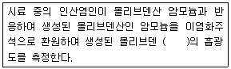
- 적자색
- 황갈색
- 황색
- 청색
(정답률: 48%)
47. 다음은 페놀류측정(자외선/가시선 분광법)에 관한 내용이다. ( )안에 옳은 내용은?
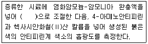
- pH 4 이하
- pH 8
- pH 9
- pH 10
(정답률: 65%)
48. 다음은 이온 전극법을 적용하여 불소를 측정하는 경우의 설명이다. ( )안의 내용으로 옳은 것은?
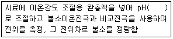
- 4.0~4.5
- 5.0~5.5
- 6.5~7.5
- 8.0~8.5
(정답률: 52%)
49. 시료의 전처리 방법과 가장 거리가 먼 것은?
- 산분해법
- 마이크로파 산분해법
- 용매추출법
- 촉매분해법
(정답률: 71%)
50. 물벼룩을 이용한 급성 독성 시험법에서 적용되는 용어인 '치사' 의 정의로 옳은 것은?
- 일정 비율로 준비된 시료에 물벼룩을 투입하여 12시간 경과후 시험용기를 살며시 움직여주고, 15초 후 관찰했을때 아무 반응이 없는 경우
- 일정 비율로 준비된 시료에 물벼룩을 투입하여 12시간 경과후 시험용기를 살며시 움직여주고, 30초 후 관찰했을때 아무 반응이 없는 경우
- 일정 비율로 준비된 시료에 물벼룩을 투입하여 24시간 경과후 시험용기를 살며시 움직여주고, 15초 후 관찰했을때 아무 반응이 없는 경우
- 일정 비율로 준비된 시료에 물벼룩을 투입하여 24시간 경과후 시험용기를 살며시 움직여주고, 30초 후 관찰했을때 아무 반응이 없는 경우
(정답률: 77%)
51. 시료의 보존방법이 다른 항목은?
- 음이온계면활성제
- 6가크롬
- 알킬수은
- 질산성질소
(정답률: 53%)
52. 다음은 구리의 측정(자외선/가시선 분광법 기준)원리에 관한 내용이다. ( )안에 내용으로 옳은 것은?
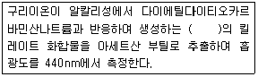
- 황갈색
- 청색
- 적갈색
- 적자색
(정답률: 68%)
53. 다음은 하천수의 오염 및 용수의 목적에 따른 채수지점에 관한 내용이다. ( )안에 옳은 내용은?
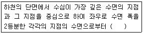
- 수심이 2m 미만일 때는 표층수를 대표로 하고 2m 이상 일 때는 수심 1/3 지점에서 채수한다.
- 수심이 2m 미만일 때는 수심의 1/2에서 2m이상일 때는 수심 1/3 및 2/3 지점에서 각각 채수한다.
- 수심이 2m 미만일 때는 표층수를 대표로 하고 2m 이상 일 때는 수심 2/3 지점에서 채수한다.
- 수심이 2m 미만일 때는 수심의 1/3에서 2m이상일 때는 수심 1/3 및 2/3 지점에서 각각 채수한다.
(정답률: 57%)
54. 시안(자외선/가시선 분광법) 분석에 관한 설명으로 틀린 것은?
- 각 시안화합물의 종류를 구분하여 정량할 수 없다.
- 황화합물이 함유된 시료는 아세트산나트륨 용액을 넣어 제거한다.
- 시료에 다량의 유지류를 포함한 경우 노말헥산 또는 클로로폼으로 추출하여 제거한다.
- 정량한계는 0.01mg/L이다.
(정답률: 45%)
55. 온도 표시로 틀린 것은?
- 냉수는 15℃ 이하
- 온수는 60~70℃
- 찬 곳은 0~4℃
- 실온은 1~35℃
(정답률: 83%)
56. 금속류 중 원자형광법을 시험방법으로 분석하는 것은? (단, 수질오염공정심험기준 기준)
- 바륨
- 수은
- 주석
- 셀레늄
(정답률: 53%)
57. 노말헥산 추출물질(총 노말헥산 추출물질) 함유량 측정(절차)에 관한 설명인 아래 밑줄 친 내용 중 틀린것은?
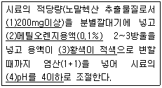
- (1)
- (2)
- (3)
- (4)
(정답률: 55%)
58. 다음은 총대장균군(평판집락법 적용) 측정에 관한 내용이다. ( )안에 옳은 내용은?
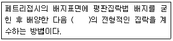
- 진한갈색
- 진한적색
- 청색
- 황색
(정답률: 76%)
59. 채취된 시료의 최대 보존 기간이 가장 짧은 측정 항목은?
- 부유물질
- 음이온계면활성제
- 암모니아성 질소
- 염소이온
(정답률: 49%)
60. 수질오염공정시험기준에서 사용되는 용어의 정의로 틀린 것은?
- 정확히 단다 : 규정된 양의 시료를 취하여 화학저울 또는 미량저울로 칭량함을 말한다.
- 약 : 기재된 양에 대하여 ±10% 이상의 차가 있어서는 안 된다.
- 즉시 : 30초 이내에 표시된 조작을 하는 것을 뜻한다.
- 감압 : 따로 규정이 없는 한 15mmHg 하를 뜻한다.
(정답률: 70%)
4과목: 수질환경관계법규
61. 기타 수질오염원 시설인 금은판매점의 세공시설의 규모 기준으로 옳은 것은?
- 폐수발생량이 1일 0.01 세제곱 미터 이상일 것
- 폐수발생량이 1일 0.1 세제곱 미터 이상일 것
- 폐수발생량이 1일 1 세제곱 미터 이상일 것
- 페수발생량이 1일 10 세제곱 미터 이상일 것
(정답률: 47%)
62. 수질오염방지시설 중 물리적 처리시설에 해당되는 것은?
- 응집시설
- 흡착시설
- 침전물 개량시설
- 중화시설
(정답률: 76%)
63. 폐수처리업의 종류(업종 구분)로 가장 옳은 것은?
- 폐수 수탁처리업, 폐수 재이용업
- 폐수 수탁처리업, 폐수 재활용업
- 폐수 위탁처리업, 폐수 수거, 운반업
- 폐수 수탁처리업, 폐수 위탁처리업
(정답률: 64%)
64. 수질 및 수생태게 환경기준인 수질 및 수생태계 상태별 생물학적 특성 이해표에 관한 내용 중 생물 등급이 [약간나쁨~매우나쁨] 생물지표종(어류)으로 틀린것은?
- 피라미
- 미꾸라지
- 메기
- 붕어
(정답률: 85%)
65. 물놀이 등의 행위제한 권고기준으로 옳은 것은?(단, 대상 행위 - 항목 - 기준
- 수영등 물놀이 - 대장균 - 1000(개체수/100mL)이상
- 수영등 물놀이 - 대장균 - 5000(개체수/100mL)이상
- 어패류 등 섭취 - 어패류 체내 총 수은(Hg) - 0.3mg/kg이상
- 어패류 등 섭취 - 어패류 체내 총 수은(Hg) - 0.03mg/kg이상
(정답률: 60%)
66. 낚시금지구역에서 낚시행위를 한 자에 대한 벌칙 또는 과태료 기준으로 옳은 것은?
- 벌금 200만원 이하
- 벌금 300만원 이하
- 과태료 200만원 이하
- 과태료 300만원 이하
(정답률: 55%)
67. 시장, 군수, 구청장이 낚시금지구역 또는 낚시제한 구역을 지정하려는 경우 고려하여야 할 사항과 가장 거리가 먼 것은?
- 용수 사용 및 배출 현황
- 낚시터 인근에서의 쓰레기 발생현황 및 처리여건
- 수질오염도
- 서식 어류의 종류 및 양 등 수중생태계의 현황
(정답률: 48%)
68. 다음의 위임업무 보고사항 중 보고 횟수 기준이 다른 것은?
- 기타 수질오염원 현황
- 폐수처리업에 대한 등록, 지도단속실적 및 처리실적 현황
- 폐수위탁 ㆍ 사업장 내 처리현황 및 처리실적
- 골프장 맹, 고독성 농약 사용 여부 확인결과
(정답률: 45%)
69. 수질오염경보의 종류별 경보단계별 조치사항 중조류경보의 단계가 [조류 대발생 경보]인 경우의 취수장, 정수장 관리자의 조치사항과 가장 거리가 먼 것은?
- 조류증식 수심 이하로 취수구 이동
- 취수구에 대한 조류 방어막 설치
- 정수 처리 강화(활성탄 처리, 오존 처리)
- 정수의 독소분석 실시
(정답률: 79%)
70. 수질 및 수생태계 환경기준 중 하천에서 사람의 건강보호기준으로 틀린 것은?
- 1.4-다이옥세인 : 0.⑤mg/L 이하
- 수은 : 0.⑤mg/L 이하
- 납 : 0.⑤mg/L 이하
- 6가 크롬 : 0.⑤mg/L 이하
(정답률: 73%)
71. 환경기술인 등의 교육기간, 대상자 등에 관한 내용으로 틀린 것은?
- 폐수처리업에 종사하는 기술요원의 교육기관은 국립환경인력개발원이다.
- 환경기술인과정과 폐수처리기술요원과정의 교육기간은 3일 이내로 한다.
- 최초교육은 환경기술인 등이 최초로 업무에 종사한 날부터 1년 이내에 실시하는 교육이다.
- 보수교육은 최초교육 후 3년 마다 실시하는 교육이다.
(정답률: 80%)
72. 1일 폐수배출량이 500m3인 사업장의 규모 기준으로 옳은 것은? (단, 기타 조건은 고려하지 않음)
- 2종 사업장
- 3종 사업장
- 4종 사업장
- 5종 사업장
(정답률: 79%)
73. 환경부장관이 폐수처리업의 등록을 한 자에 대하여 영업정지를 명하여야 하는 경우로 그 영업정지가 주민의 생활 그 밖의 공익에 현저한 지장을 초래할 우려가 있다고 인정되는 경우에는 영업정지처분에 갈음하여 과징금을 부과 할 수 있다. 이 경우 최대 과징금액수는?
- 1억원
- 2억원
- 3억원
- 5억원
(정답률: 64%)
74. 환경부장관 또는 시도지사가 고시하는 측정망 설치계획에 포함되어야 할 사항과 가장 거리가 먼 것은?
- 측정망 운영기관
- 측정망 관리계획
- 측정망을 설치할 토지 또는 건축물의 위치 및 면적
- 측정자료의 확인 방법
(정답률: 35%)
75. 다음은 수질오염감시경보의 경보단게 발령, 해제 기준이다. ( )안에 옳은 내용은?
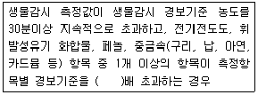
- 2배
- 3배
- 5배
- 10배
(정답률: 48%)
76. 폐수종말처리시설의 방류수 수질기준으로 옳은 것은? (단, Ⅰ지역 기준, ( )는 농공단지 폐수종말처리 시설의 방류수 수질기준)
- 총질소 10(20)mg/L 이하
- 총인 0.2(0.2)mg/L 이하
- COD 10(20)mg/L 이하
- 부유물질 20(30)mg/L 이하
(정답률: 29%)
77. 수질오염물질의 항목별 배출허용기준 중 1일 폐수 배출량이 2000m3미만인 폐수배출시설의 지역별, 항목별 배출허용기준으로 틀린 것은? (순서대로 BOD(mg/L), COD(mgL), SS(mg/L))
- 청정지역 40이하, 50이하, 40이하
- 가지역 60이하, 70이하, 60이하
- 나지역 120이하, 130이하, 120이하
- 특례지역 30이하, 40이하, 30이하
(정답률: 57%)
78. 수질 및 수생태계 보전에 관한 법률에 사용하고 있는 용어의 정이와 가장 거리가 먼 것은?
- 점오염원 : 폐수배출시설, 하수발생시설, 축사 등으로서 관거, 수로 등을 통하여 일정한 지점으로 수질오염물질을 배출하는 배출원
- 비점오염원 : 도시, 도로, 농지, 산지, 공사장 등으로서 불특정 장소에서 불특정하게 수질오염물질을 배출하는 배출원
- 폐수무방류배출시설 : 폐수배출시설에서 발생하는 폐수를 당해 사업장 안에서 수질오염방지시설을 이용하여 처리하거나 동일 배출시설에 재이용하는 등 공공 수역으로 배출하지 아니하는 폐수배출시설
- 강우유출수 : 점오염원, 비점오염원 및 기타 오염원의 수질오염물질이 섞여 유출되는 빗물 또는 눈 녹은 물
(정답률: 73%)
79. 환경부장관이 설치, 운영하는 측정망의 종류와 가장 거리가 먼 것은?
- 유독물질 측정망
- 생물 측정망
- 비점오염원에서 배출되는 비점오염물질 측정망
- 퇴적물 측정망
(정답률: 52%)
80. 비점오염원의 변경신고 기준으로 틀린 것은?
- 상호, 대표자, 사업명 또는 업종의 변경
- 총 사업면적, 개발면적 또는 사업장 부지면적이 처음 신고면적의 100분의 30이상 증가하는 경우
- 비점오염저감시설의 종류, 위치, 용량이 변경되는 경우
- 비점오염원 또는 비점오염저감시설의 전부 또는 일부를 폐쇄하는 경우
(정답률: 68%)
A → B
반응속도식은 다음과 같다.
r = -d[A]/dt = k[A]
여기서 k는 속도상수이다.
농도가 시간에 따라 지수함수적으로 감소하므로, 농도의 변화는 다음과 같이 나타낼 수 있다.
[A]t = [A]0 * e^(-kt)
여기서 [A]t는 시간 t에서의 농도이고, [A]0는 반응시작 때의 농도이다.
2시간 후의 농도가 35mg/L이므로,
35 = 200 * e^(-2k)
k = 0.693/2 = 0.3465 (시간의 역수로 나타낸 속도상수)
1시간 후의 농도는 다음과 같이 계산할 수 있다.
[A]1 = [A]0 * e^(-k)
[A]1 = 200 * e^(-0.3465) = 약 84mg/L
따라서 정답은 "약 84mg/L"이다.